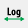

Pydidas 1D plot
The PydidasPlot1d is a
subclassed silx Plot1d
with additional features useful in pydidas.

- The menu
The menu bar allows access to all generic silx and additional pydidas functionality. The detailed menu icons and actions are described below in the menu entries description.
- The plot display
This plot shows the data. Depending on the zoom level, this is either the full image or a sub-region.
- The position information
This widget displays the coordinates and data values of the data under the mouse cursor.
menu entries description
menu icon |
description |
|---|---|

|
Zoom mode: clicking with the mouse and dragging spans a new selection of the data to be visualized. |

|
Panning mode: clicking with the mouse and dragging moves the data on the canvas. |

|
Unzoom: Reset the display region to the full data. |

|
Activate autoscaling of the x-axis. If enabled, the x-axis will be matched to the data range upon activation or upon using the “Unzoom” button. |
Activate autoscaling of the y-axis. If enabled, the y-axis will be matched to the data range upon activation or upon using the “Unzoom” button. |
|
|  | Switch between a linear and a logarithmic x-axis. |

|
Switch between a linear and a logarithmic y-axis. |

|
Toggle a grid in the main plotting canvas. |

|
Change the drawing style. Repeatedly using this button will cycle through lines, dots, and lines & dots styles for the curve. |

|
Change the plotted data to the generic y vs. x plot without any special operations. |
Plot data in a Kratky-type plot using y * x^2 vs. x for the y and x-axis, respectively. This plot allows, for example, to correct for the q-dependence of the scattering intensity in small angle scattering. |
|

|
Copy the currently visible figure to the clipboard. |

|
Save the currently loaded full data to file, ignoring any zooming. This function will open a dialogue to select the file type and filename. Depending on the selected file type, the colormap and scaling will be retained (e.g. for png export) or ignored (e.g. tiff export). |

|
Print the currently visible figure. This will print the current canvas (and therefore only the data visible on the canvas). |